What is software testing?
For example these are:
- Regression testing
- Usability testing
- Explorative testing
- Ad-hoc testing
Automated regression testing

End to end (e2e) testing
- Whole system under testing
- Usually test inputs data from UI and/or APIs
- Verifications are made from UI and/or APIs
- One should have low number of these tests
Integration testing
- Part of system or part of process under testing
- One should have these tests more than e2e tests but less than unit tests
Unit testing
- One "unit" under test (class or similar)
- Really fast to run
- No external requiments (e.g. database)
- One should have lots of unit tests
Unit test example
def test_calculate_sum():
# Arrange: Set up test data (inputs)
num1 = 5
num2 = 3
# Act: Call the function with the test data
result = calculate_sum(num1, num2)
# Assert: Check that the result is as expected
expected_result = 8
assert result == expected_result, f"Expected {expected_result}, but got {result}"
Unit test structure
- AAA principle
- Arrange: create initial state for test
- Act: execute code under test
- Assert: verify results
Good unit test
- Small: tests only one thing (independent)
- Follows AAA principle (structured)
- Controls circumstances (isolated)
- Does not cause side effects to other tests (isolated)
- DAMP not DRY (descriptive)
- Fast to run (under 1 sec)
- Reliable (repeatable)
What if unit testing is hard?
- Usually this means that code was not written as testable
- For example static functions are poison for unit tests
- In testable code external dependencies are injected to unit
- Dependency injection (for example Spring framework)
- Constructor injection
- Testable code (usually) produces better architecture
When should unit test be executed?
- All the time!
- Every developer when changing anything
- CI/CD pipeline for every commit / PR / MR